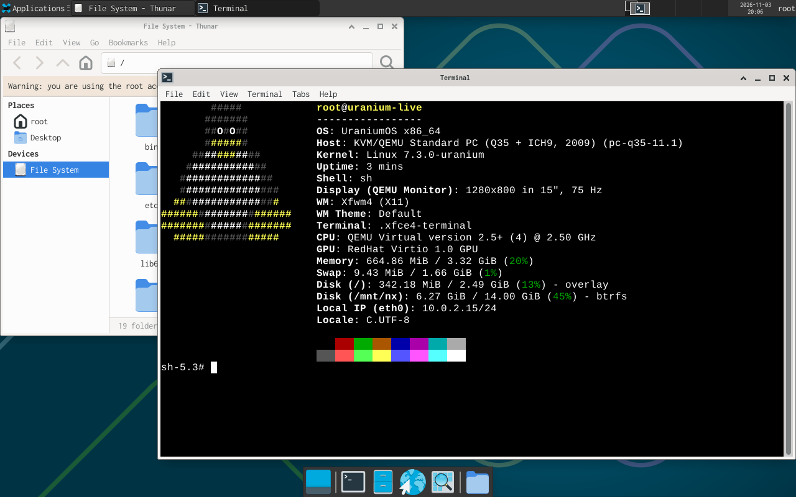

UraniumOS
The radioactive, proactive Linux distribution.
UraniumOS is a Linux distribution that is lightweight, secure and hardened.
Latest release
| Release: | UraniumOS 0.1.1 (news) |
| Image: | Live ISO with installer, 937 MB, UEFI |
| Date: | 2026-11-04 |
| Notes: | Differences and known failures |
Features
Not a fork
UraniumOS is not based on another distribution. The tools are written for it, and the kernel is built from mainline source with it's own configuration. Packages come from the Nix collection.
Undo
Every package operation and every update takes a snapshot before it begins, and every snapshot is an entry in the boot menu. A system that no longer boots is therefore one reboot away from the last state in which it did.
Self-reverting updates
An update is built in a copy of the system and applied at the next boot, on trial. If geiger reports a problem, the system returns to its previous state.
Hardened by default
Incoming traffic is dropped, ssh is off until you enable it, and doas is the only setuid program. The kernel has memory hardening enabled and has no module support.
Stability first
The package index remains at a fixed revision until you move it. Two installations of the same package on different days give the same version, and the installed set can be copied to another machine.
Containers and sandboxes
silo and hazmat keep a program away from the rest of the system. A silo is a container that has its own packages, root, home and hostname, and that sees none of the files of the host. hazmat runs one command in a read-only system with an empty home, and, with -n, without a network.
runit + busybox
UraniumOS uses runit as the service supervisor, and busybox for init, getty, login, the DHCP client and cron. A service is a directory, and hazmat can confine a service in the same way that it confines a command.
Signed releases
The release files are listed in a SHA256 file that is signed with signify, and every package is checked against a signature before it is installed.
Bisect
scram bisect finds the frame in which something started to fail. It runs a command in the frames between a good frame and a bad frame, and names the first frame in which the command failed.
Tools
- scram
The tool that keeps read-only frames of the root and the home directories. Every frame is a boot menu entry, and
scram bisectnames the first frame in which something broke. - rod
The package manager. It uses a pinned Nix index, installs into a profile with generations, and reports which package owns a file or what a package needs.
- silo
The tool for containers that have their own packages, root, home and hostname.
- hazmat
The tool that runs one command in a read-only system with an empty home, and, with
-n, without a network. - blastdoor
The firewall tool. The firewall drops all incoming connections except ssh, ping and replies. Ports are files in
/etc/nftables.d. - geiger
The health report. It reports failed services, a missing address, full disks and stale frames.
Requirements
| CPU | x86-64 |
| Firmware | UEFI. BIOS is not supported. |
| Memory | Tested with 2 GB. The minimum has not been measured. |
| Disk | Tested with 8 GB. |
| Network | Required for packages. The package index is not on the ISO. |
| Tested on | QEMU with KVM and OVMF. Real hardware has not been tried. |
See hardware status.
News and updates
UraniumOS 0.1.1 released
2026-11-04
- The live ISO includes the Xfce desktop. Log in as root and run
startx. - The ISO is 937 MB. The stage and tools tarballs are rebuilt for 0.1.1.
